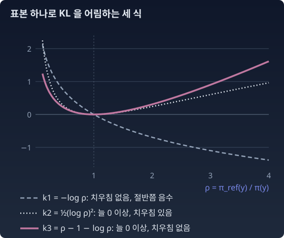

GRPO의 KL 항: 값과 기울기가 다른 KL을 가리킨다
“식에 KL(π‖πref) 라고 적어 두면, 학습은 정말 그 KL을 줄이는가?”
KL의 방향 절에서, 방향이 결과를 바꿀 수 있음을 보았다. 모형족이 목표를 다 담지 못할 때, KL(목표‖π) 는 봉우리들 사이에 넓게 걸치고 KL(π‖목표) 는 한쪽 봉우리를 고른다. 그렇다면 실제 구현이 어느 방향의 KL을 줄이고 있는지가 중요해진다. 그런데 그것은 식에 적힌 것과 다를 수 있다.
GRPO에서의 실현
DeepSeekMath(Shao 외 2024)가 제안한 GRPO(한 문제에 답을 여러 개 뽑아 서로 비교해 보상을 매기는 강화학습)는 보상에 KL을 섞지 않고 손실에 KL 항을 직접 더한다. 표본 하나로 KL(π‖πref) 를 추정하는 데는 슐먼(John Schulman)이 2020년 블로그 글 「KL 발산 어림하기(Approximating KL Divergence)」에서 정리한 추정량을 쓴다.
표본 하나로 KL 을 어림하기
답변의 가짓수가 너무 많으면 KL 을 모든 답변에 걸쳐 더해 계산할 수 없다. 정책에서 답변을 몇 개 뽑아 어림해야 한다. 슐먼의 글은 그 어림식을 차례로 고친다. 아래에서 ρ(로) = πref(y)/π(y) 라 쓴다. 첫째 식 −log ρ 는 평균이 KL 과 정확히 같지만, 표본의 절반쯤에서 음수가 나와 흔들림이 크다. KL 은 늘 0 이상인데 표본 하나하나는 그렇지 않은 것이다. 둘째 식 ½(log ρ)² 는 늘 0 이상이고 흔들림도 작지만, 평균이 KL 에서 조금 치우친다. 셋째 식은 첫째 식에 평균이 0 인 양 ρ − 1 을 더해 흔들림을 줄인 것이다. log x ≤ x − 1 이므로 더한 결과는 늘 0 이상이다. 글은 이 셋을 k1, k2, k3 이라 불렀다. 그래서 k3 은 k 곱하기 3 이 아니라 「셋째 추정량」이라는 이름이다.

값으로서는 흠이 없다. π 에서 뽑은 표본으로 평균 내면 정확히 KL(π‖πref) 다. 문제는 이 값을 손실로 두고 미분할 때 생긴다. 표본을 뽑은 분포는 미분하지 않고(표본은 이미 뽑혔으니까) k3 만 미분하면, ρ = πref/π 라 할 때 ∇k3 = (1 − ρ)∇log π 이고, 그 기댓값은
첫 등호는 Eπ[∇log π] = Σ ∇π = 0 을 쓴 것이다. 값은 KL(π‖πref) 를 재면서, 기울기는 KL(πref‖π) 를 줄이는 쪽으로 민다. Tang과 Munos(2025)가 이 함정을 정리했다. “KL 추정값을 손실로 두고 미분하면 대개 KL의 올바른 기울기가 나오지 않는다.” 그러면 어떤 손실을 써야 올바른 기울기가 나오는지, 그리고 실제 GRPO처럼 표본을 한 걸음 전의 정책 πold 에서 뽑으면 무엇이 더 달라지는지(Zhang 외 2025)는 아래 문제에서 따진다.
이 차이가 작아 보이지만, 우리 교재의 언어로는 사영 방향의 차이다. 식에 적힌 것은 π 쪽에 무게를 둔 KL, 실제로 미는 방향은 참조 쪽에 무게를 둔 KL.
한 가지 덧붙인다. 2025년의 RLVR 연구 여럿은 이 KL 항을 아예 뺀다. KL 벌칙은 원래 RLHF에서 온 것이다. 거기서는 보상 모델이 참조 모형 근처의 답들로 학습되어 그 근처에서만 믿을 만하니, 정책이 참조에서 멀리 가지 못하게 묶어 둘 까닭이 있었다. DAPO(Yu 외 2025)는 기본 GRPO가 학습 중에 엔트로피가 무너지는 것 같은 문제를 보인다며 손질 몇 가지를 내놓았고, KL 항을 빼는 것도 그 하나였다. 긴 추론을 학습하는 동안에는 모형이 초기 모형에서 크게 벗어나는 것이 자연스러우니 이 제약이 필요 없다는 까닭이다. Dr. GRPO(Liu 외 2025)는 GRPO가 답의 길이와 보상의 표준편차로 나누면서 생기는 치우침(틀린 답이 갈수록 길어지는 것)을 고친 방법인데, 규칙 기반 검증기는 보상 모델처럼 참조 근처에서만 믿을 만한 것이 아니라며 β = 0 으로 두었다. 그러면 기울이기 절의 닫힌꼴 π* ∝ πref·er/β 은 β → 0 극한, 정답 집합으로의 조건부화 쪽으로 간다.
파이썬
세 답변 위의 소프트맥스 정책으로 k3 손실의 기울기 기댓값을 직접 계산한다.
import numpy as np
def softmax(z): e = np.exp(z - z.max()); return e / e.sum()
theta = np.array([1.0, 0.0, -0.5]) # 정책 로짓
ref = np.array([0.2, 0.5, 0.3]) # 참조 정책
pi = softmax(theta)
J = np.eye(3) - pi[None, :] # J[y] = ∇ log π(y) (로짓에 대한 기울기)
rho = ref / pi
print("E[k3] ", np.sum(pi * (rho - np.log(rho) - 1)).round(4),
" KL(π‖ref)", np.sum(pi * np.log(pi / ref)).round(4))
print("k3 손실 기울기 ", ((pi * (1 - rho)) @ J).round(4))
print("∇KL(ref‖π) ", (-(ref @ J)).round(4))
print("∇KL(π‖ref) ", ((pi * np.log(pi / ref)) @ J).round(4))
# E[k3] 0.4347 KL(π‖ref) 0.4347
# k3 손실 기울기 [ 0.4285 -0.2688 -0.1598]
# ∇KL(ref‖π) [ 0.4285 -0.2688 -0.1598]
# ∇KL(π‖ref) [ 0.4465 -0.2788 -0.1676]
값은 KL(π‖πref) 와 같고, 기울기는 KL(πref‖π) 의 것과 같다.
수확
“추정량의 값과 기울기는 서로 다른 KL을 가리킬 수 있다. GRPO의 k3 항은 값으로는 KL(π‖πref) 를 재지만, 손실로 미분하면 KL(πref‖π) 를 줄이는 쪽으로 민다.”
문제 9. 값이 치우친 추정량의 기울기 (킬러)
정책 π = softmax(θ), θ = (0, 1, 0.5), 참조 πref = (0.5, 0.3, 0.2), ρ = πref(y)/π(y) 이다. (가) Ey∼π[k3] 가 KL(π‖πref) 와 같음을 보이고, 숫자로 확인하라. 둘째 추정량 ½(log ρ)² 의 기댓값도 구해 견주어라. (나) 표본을 고정하고 ½(log ρ)² 를 손실로 두어 θ 로 미분하면, 그 기울기의 기댓값은 어느 KL의 기울기인가? k3 의 경우와 견주어라. (다) 표본을 π 가 아닌 πold = softmax(0.5, 0.5, 0) 에서 뽑으면 k3 기울기의 기댓값은 어떻게 되는가?
함께 풀기

(가)는 바로 나와요. Eπ[ρ] = Σ πref = 1 이니까 1 − Eπ[log ρ] − 1 = Eπ[log π/πref]. 숫자로도 둘 다 0.2132 요. ½(log ρ)² 의 기댓값은 0.1885 라서 KL 보다 작아요. 치우친 추정량이 맞네요.
그럼 (나)는 볼 것도 없죠. 기댓값부터 KL이 아닌데, 그걸 미분한 게 KL의 기울기일 리가 없어요. 값이 정확한 k3 도 기울기는 KL(πref‖π) 쪽이었잖아요. 값이 틀린 쪽은 더 엉뚱할 거예요.

값이 맞는 것과 기울기가 맞는 것이 같은 일인지부터 봐요. k3 에서는 둘이 왜 갈렸죠?

기댓값은 π 로 냈는데 π 는 θ 에 의존하고… 코드에서는 표본을 먼저 뽑고 손실만 미분해요. 표본을 뽑은 분포는 미분 안 하고요. 그러면 값이 맞는지와 기울기가 맞는지는 따로 봐야 하는 거네요.

그럼 직접 해 보자. ∇½(log ρ)² = log ρ·∇log ρ 이고, ∇log ρ = ∇log π 니까 log ρ·∇log π. 부호는 이게 맞나?
한 단계씩 다시 써 봐요.

log ρ = log πref − log π 이고 πref 는 θ 와 무관하니까 ∇log ρ = −∇log π 예요. 그러면 ∇½(log ρ)² = −log ρ·∇log π = log(π/πref)·∇log π. 제가 부호를 뒤집었네요.
이제 π 로 평균 내면 Σ π log(π/πref)∇log π. KL(π‖πref) = Σ π log(π/πref) 를 미분하면 이 항에, Σ π∇log(π/πref) = Σ ∇π = 0 이 더해질 뿐이에요.

KL(π‖πref) 의 기울기예요. 값은 치우쳐 있는데, 기울기는 식에 적은 바로 그 KL을 줄여요. k3 하고 거꾸로네요.
숫자로 확인했어요. ½(log ρ)² 손실의 기울기가 (−0.2236, 0.1573, 0.0664) 로 ∇KL(π‖πref) 와 똑같아요. k3 쪽은 (−0.3137, 0.2065, 0.1072) 로 ∇KL(πref‖π) 와 같고요. 방향은 비슷한데 크기가 꽤 달라요.
방향이 비슷한 이유는요?
두 분포가 가까우면 두 KL 모두 ½ dθᵀI dθ(I 는 피셔 정보 행렬, 모수에 대한 스코어의 공분산)로 가니까요. 가까운 곳에서는 KL이 대칭이 돼요. 멀어질수록 차이가 커져요.
그럼 (다)는 제가 해 볼게요. 실제 GRPO는 이전 정책 πold 에서 뽑잖아요. πold = softmax(0.5, 0.5, 0) 으로 하면 k3 기울기의 기댓값이 (−0.5698, 0.3632, 0.2066) 으로, 두 KL의 기울기 어느 쪽과도 달라요.
Eπold[∇log π] 가 이제 0이 아니니까요. 위에서 쓴 「Eπ[∇log π] = 0」이 무너져요. π/πold 중요도 가중치를 곱해 주면 (−0.3137, 0.2065, 0.1072) 로 돌아가요.

둘 다 잘 왔어요. 이 문제에서 가져갈 건 세 가지예요. 추정량이 치우침이 없다(불편, unbiased)는 것은 값에 대한 말이지 기울기에 대한 말이 아니고, 거꾸로 값이 치우친 추정량이 올바른 기울기를 줄 수도 있다. 표본을 뽑은 분포도 θ 에 의존한다는 걸 잊으면 KL의 방향이 바뀐다. 그리고 표본이 다른 정책에서 왔으면 중요도 가중치로 다시 맞춰야 한다.
보고서 분량을 "평균 10쪽"으로 맞춰 놓고, 채점은 가장 짧은 보고서 기준으로 하는 거랑 비슷하네요. 평균은 맞는데 미는 방향이 다른 거.
수학 수업에서 "적분 기호 안으로 미분을 넣으려면 적분 영역이 변수에 의존하지 않아야 한다"고 했던 것과 같아요. 여기서는 적분의 무게 π 가 θ 에 의존하는데 그걸 빼고 미분한 거예요.